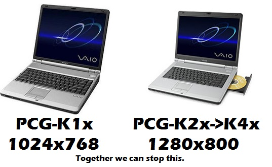

|
| |
Sony VAIO PCG-K series guideOriginally written 2/11/2022, last updated 2/11/2022 Overview of the hardwareThe Sony VAIO PCG-K series laptops (K1x, K2x, K3x, K4x, etc etc) are a series of 15-inch ""desktop replacement"" laptops with Intel Pentium 4 processors (some use the """"MOBILE"""" Pentium 4 chips from 2004), ATI Radeon IGP 345M graphics (select non-US models have been seen with Radeon 9200 cards), 266MHz DDR SDRAM, and Windows XP Home Edition with Service Pack 1a or Service Pack 2. These weren't exactly popular as sony was known for lightweight "ultra-portable" laptops, but Dell, HP, and IBM were way ahead of the market. However, they provided good portability (in some aspects...) and were fairly quick for the time, despite later falling behind the Athlon 64 mobile chips. There are 4 different models of these laptops. The PCG-K1x series has a 4:3 15-inch display running at 1024x768 while the K2x-K4x laptops have a 16:10 15-inch display running at 1280x800. The PCG-K3x series added improved cooling for Prescott CPUs, and the PCG-K4x was more of a refinement. Yes, there is not much variety, but there are definitely some notable internal differences. These laptops were part of the great Pentium 4 Mobile Computing fad of the early 2000s, and thus it was more of a one-off system. Most of the Northwood models were reliable, but later models were prone to failure, despite Sony's brilliant japanese engineering at the time. Most of this was Intel's stupid fault with their Prescott chips aiming for serious scaling. Unfortunately, that ended in 3.8GHz tops. Flaws of the systemLike with any Pentium 4 laptop from the mid-2000s, you WILL run into issues down the road. The PCG-K series laptops were somewhat more basic than competing offers as it had a Radeon IGP chip. However, pretty much all Pentium 4 laptops (and even desktops) will run into VRM failure if a poor design is implemented. This is seen commonly if you have a PCG-K3x or K4x laptop; they all use Prescott CPUs with the exception of the PCG-K33. I had a PCG-K37 which randomly shut off, and sometimes it wouldn't even have the necessary voltage to detect the hard drive. Those processors suck up so much energy! Honestly, the PCG-K series laptops don't exactly suffer from poor design. Rather, they suffer from poor execution. These laptops just had to use the wrong chipset. Competing laptops like the Inspiron 5150/5160 used an Intel Springdale chipset, while these used a rather outdated and inadequate ATI RS200M chipset. You can install 2GB of RAM in a 5150, but not in a PCG-K laptop. You can enable HT on a 5150, but not on a PCG-K laptop. Only the K3x and K4x laptops have a CPU with HT, but the computer itself will not allow for HT to work. The IGP 345M and RS200M do not support HT and are pretty much remnants of a Pentium 4-M chipset from 2002. I will admit, systems with the ATI chipset are known to be more stable, but they have some serious limitations. Sony used the wrong chipset at the wrong time for this laptop. But that might just be why it's more reliable than most other P4 laptops, especially the Inspiron 5150. These laptops also suffer from Sony's ignorance with updating their drivers and BIOS images. Luckily, the PCG-K47 BIOS has been known to work, and can be found on my Files page under R0108X3. This fixes many issues which were BIOS-related, especially the issue with "Operating system not found" on select PCG-K3x models. General recommendations for preservationThis section talks about what to do with one if you are looking to keep it up and running. BIOS updatesI cannot stress but recommend you to install R0108X3 from my website. It works on the K-series VAIOs with the IGP 345M chipset, so pretty much every one of them. It irons out the many software issues these have, especially if you end up with the "Operating system not found" error on select models. Maintenance levelHonestly, there isn't much to do from frequent maintenance of the cooling fans to dust them out, and to use high-quality thermal paste instead of the factory application. If you have upgraded your K-series with a Prescott CPU (requires R0108X3, testers wanted for other laptop models!!), you would definitely keep those in mind. The fans get super loud when you upgrade your processor to a Prescott CPU (ex. Mobile Pentium 4 538) and that is an indicator they are working harder to push cool air through the heatsink. It's not a general recommendation to install a Prescott CPU in a PCG-K33 or earlier, as the motherboards weren't exactly designed for it. I have installed a Prescott into my K23 and it works fine, but is missing some of the essential cooling. Processor upgradesYou can install a Pentium 4 chip from the Northwood era, and the best one is the Intel Pentium 4 2.8C without hyperthreading. As for prescott CPUs, you can install any Mobile Pentium 4 chip. I would recommend the Mobile Pentium 4 538 for a prescott chip. For northwoods (and for better temps and slightly quieter fans), the Mobile Pentium 4 3.06C is a good chip. Storage, RAM, Power, and Wi-FiFor a storage drive, I would recommend an mSATA to 44-pin IDE adapter with a Samsung PM871 mSATA SSD of any capacity. The max RAM for all K-series laptops is 1GB. Some RAM is used for video memory because of the ATI Radeon IGP. I recommend the Mini-PCI Atheros AR5008 Wireless-N card. There is no known whitelist on the K-series laptops. Find a 120W 19.5V Sony charger. The batteries these laptops use have the P/N PCGA-BP2NX. However, you might want to steer clear of OEM batteries; Sony cells were recalled in 2006. Operating systemThis isn't like the zd8000 where you could just run several generations of software. In hindsight with a prescott CPU, you could install Windows 8 or 8.1, but since the BIOS is so locked down with capabilities, that may not work at all. I would recommend installing Windows 2000 or Windows XP. There used to be a good amount of support for old Radeon 7000 cards on a GNU+Linux distribution, but unfortunately pretty much all modern kernels do not provide adequate support to run such an ancient framebuffer. As for a hackintosh, there are old distros like NO, NO, AND NO. ConclusionThe Sony VAIO PCG-K series laptops have to be the more "to-the-point" Pentium 4 laptops of the era, but they weren't of much interest either. With okay processors and paltry graphics options, it did not attract most buyers. But for those who for some reason wanted a Pentium 4 laptop that was somewhat reliable, they usually opted for the VAIO. It's an interesting laptop in the sense that it was like an example of a more low-end Pentium 4 powered laptop. As we all know, these proof of concept systems that were made throughout the early-mid 2000s by various manufacturers ended in sheer disaster. Overheating, impracticality, bulkiness, and pretty much little to no market adoption. Apple could have done a PowerBook G5 with a much thicker body, but was it going to be something that most people would buy? Absolutely not. The Sony VAIO PCG-K series laptops have their place as some of the least interesting Pentium 4-based laptops of the time. As with most companies that made Pentium 4 laptops, they just gave up and moved on to the Pentium M and Intel Core series chips.... except for one company that wasn't "clevo" at the time about it. |